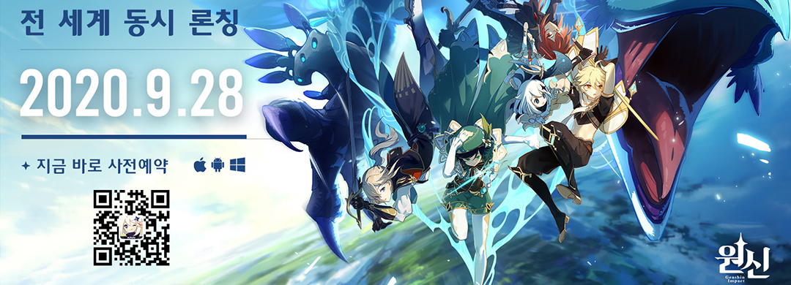
2020년 9월 28일 PlayStation®4, iOS, Android, PC 플랫폼에서 출시되었다. 중국, 유럽, 아시아, 대만·홍콩·마카오 서버가 개방되었으며, 전세계 사전예약 1000만명을 달성하였다. 「바람 잡는 이방인, 다시 여정에 오를 때, 반드시 여행 본래의 의미를 기억해야 해」
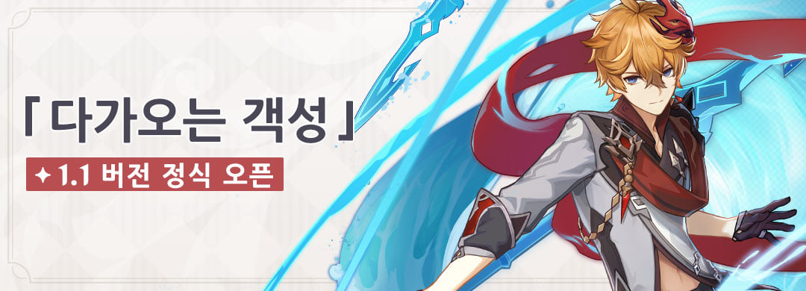
마신 전쟁의 일곱 승리자는 과거 리월에 모여 함께 술을 마셨다. 2천 년 동안 신위가 교체되면서 그때의 신은 둘만 남게 됐다.
6번째 참석자인 「암왕제군」의 영혼이 하늘로 돌아갔을 때 지난날의 마신이 다시 리월에 강림한다. 왕좌를 노리는 객성, 검은 파도가 도시를 파괴하려 하는데…
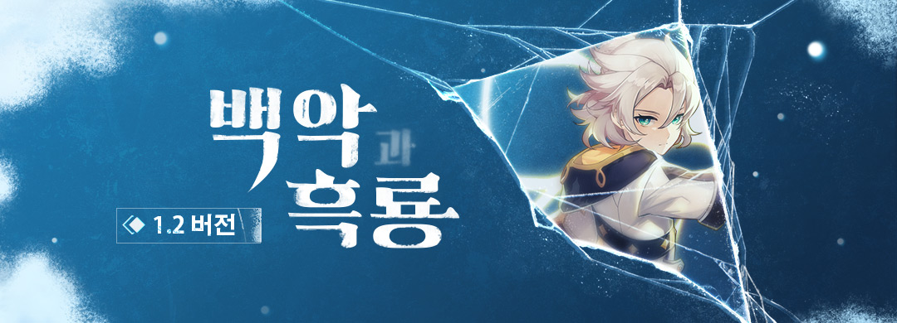
과거 드발린과 싸웠던 흑룡 「두린」의 사체가 떨어진 산으로 「드래곤 스파인」로 불린다.
쌓여있는 눈과 혹한, 독혈, 그리고 마물로 구성된 악랄한 환경으로 인해 산에 오르는 이들은 매우 드물다. 하지만 별바다를 건너온 여행자는 이곳을 여행하게 되는데…
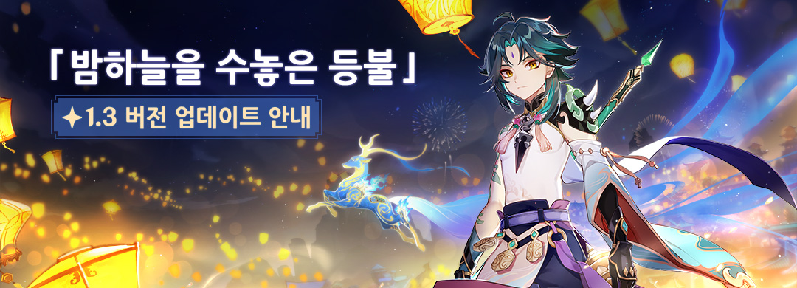
「성대한 해등절을 맞아 영웅의 영혼이 돌아오길 기도한다」
아무리 보잘것없는 소원이라도 세상에 기억될 것이고,
마음이 이어진 이들은 결국 꿈처럼 찬란한 밤에 다시 만나리라.
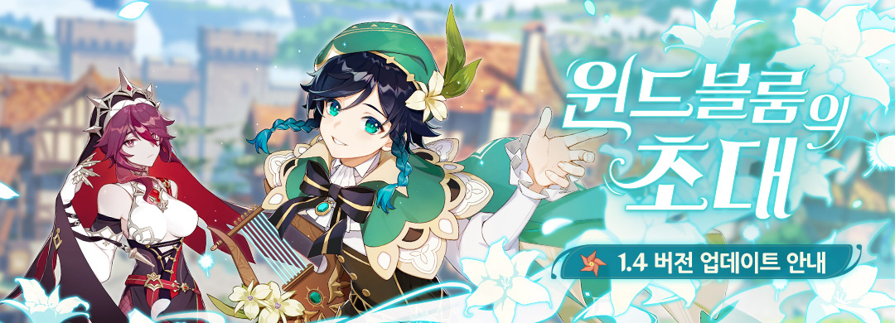
바람 속에서 환희의 찬가가 울려퍼지고,
꽃 속에 오래된 시가 숨겨져 있다.
당신이 혹시 그 축제의 의미에 대해서 알고 싶다면
자신의 숨겨진 마음을 헤아려 봐야 한다.
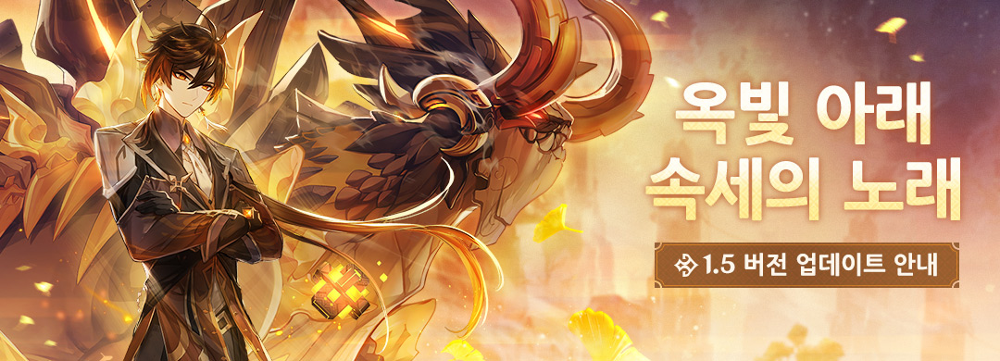
밝은 달이 나뭇가지에 내려앉고 남천에서 용의 울음소리가 들려온다. 햇빛이 순간 비치지만 바위의 마음은 부동하기 그지없다.
불의 인장으로 계약이 맺어지고 얼음이 파도처럼 밀려온다. 속세의 노랫소리가 선계 가득 울려 퍼진다.
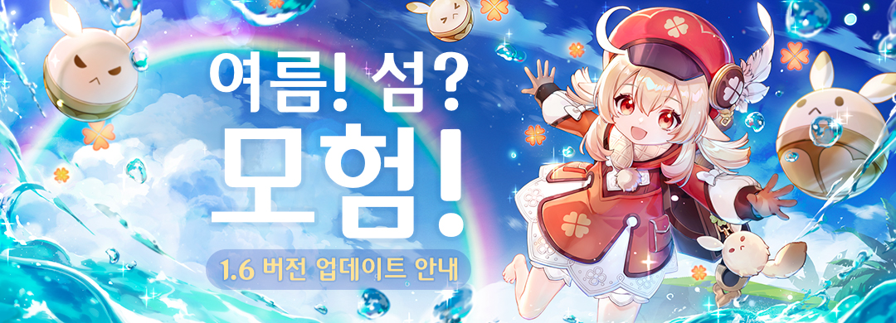
한 여름날, 창가에 수수께끼의 편지 하나가 놓여있고 머나먼 곳에선 미지의 안개가 감돌고 있다.
파도 소리를 따라 찾아간 끝에 만난 것은 넘실대는 불꽃과 하늘 위의 도망치는 태양이었다.
「가장 좋은 친구」를 위해 「대모험」을 위해, 가장 어린 기사가 출동을 준비한다——출발~!
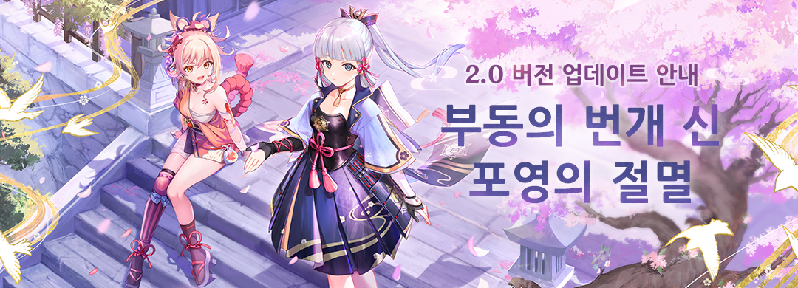
이국의 번개가 천공을 가르며 영원을 꿈꾼다. 천둥이 그림자를 끊고 신의 뜻을 따른다
끝없는 뇌우를 뚫고 벚꽃의 가호가 서린 열도에 들어서 위대하신 나루카미 쇼군이 추구하는 영원을 지켜보아라.
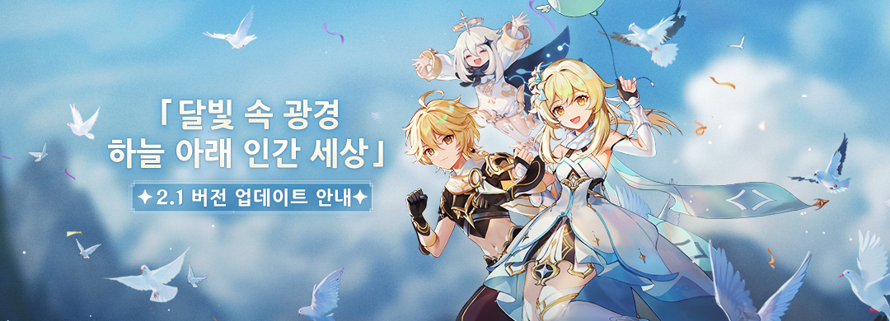
사람들의 염원을 모아 이 달빛 아래서 뇌명과 열화를 지켜보고 밥 짓는 연기와 화려한 등불을 같이 감상한다.
천년의 달빛, 만년의 바위. 물 위에 비친 달그림자만큼 속세의 일은 하염없다.
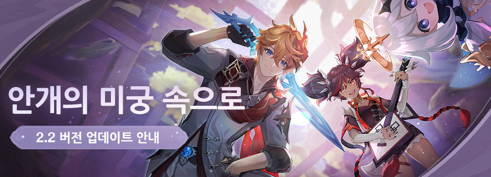
비경에 감춰진 병사들의 시련, 안개 속에 감춰진 처연한 과거.
베일에 숨겨진 비밀이 밝혀질 때, 전투를 갈망하는 무인이든
먼 길을 떠나는 여행자든 모두 자신만의 정답을 찾게 될 것이다.
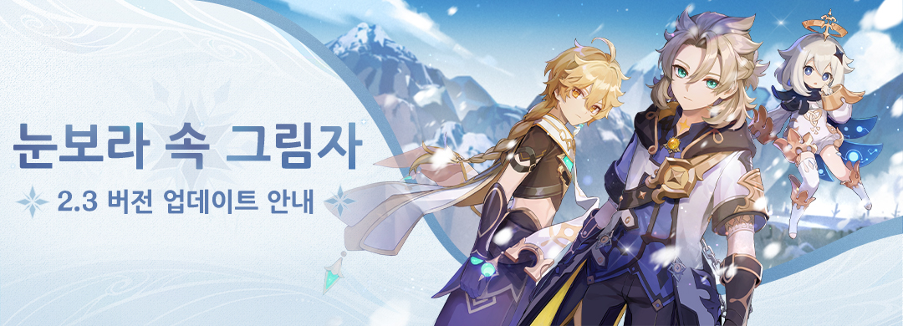
극한의 추위에 절로 뒷걸음질 치게 되지만, 생명의 비밀이 그 속에서 천천히 자라나고 있다.
눈 속에 숨어있는 어둠의 그림자를 쫓아 잿더미를 털어내면 새하얀 먼지가 내려앉는다.
참고로 이 사건들은 「아라타키파」의 초대 두목 아라타키 이토와는 무관한 일임을 밝힌다.
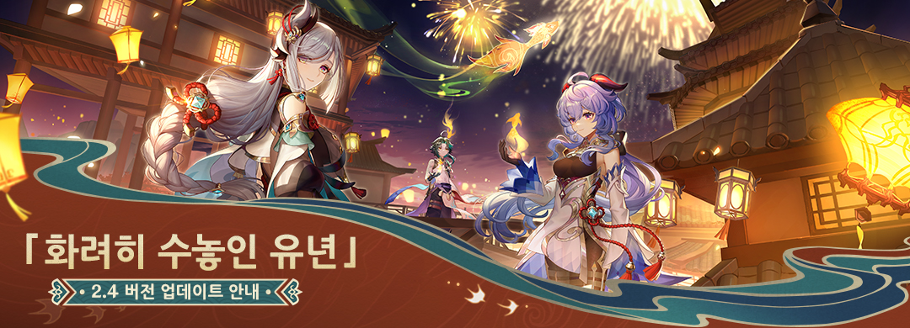
빛이 닿지 않는 곳에 기회를 엿보는 기괴한 적들이 숨어있다.
백주가 없는 곳에 남아 있는 불씨는 아직 꺼지지 않았고,
햇빛이 비치는 곳에서 사람들은 여전히 기대를 가득 안고 있다.
그 진실된 희망은 활짝 피어난 불꽃처럼 휘황찬란하다.
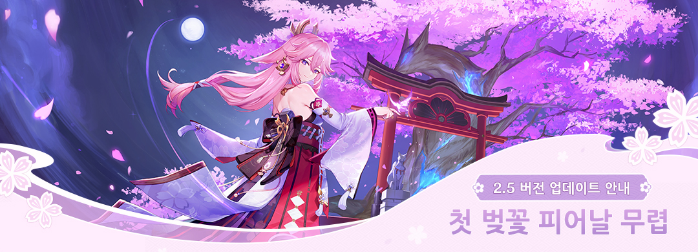
신성한 벚나무는 아주 오래전 요고우산 정상에 뿌리를 내리고 끊임없이 뻗어 나갔다.
벚나무의 그늘 아래 어떤 이는 복을 기원하고, 여우 요괴는 웃으며 속세를 바라보며, 신은 찰나의 영원을 꿈꾼다.
세월이 흘러 사람이 모였다 흩어져도 붉은 벚꽃만이 변함없이 매년 살랑이는 바람 속에서 활짝 피어난다.
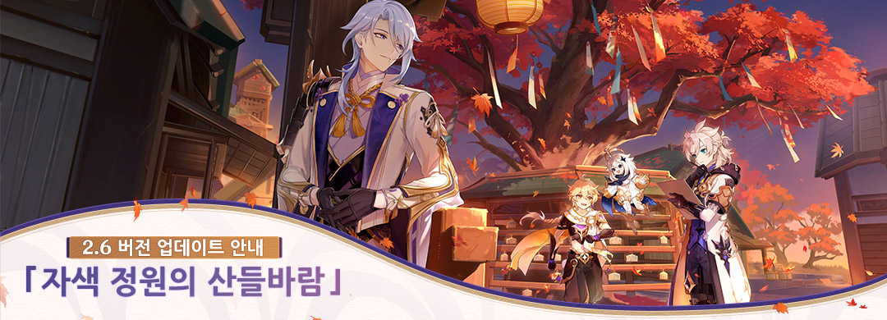
푸른 들판의 산들바람이 한 폭의 그림과 같은 자색 정원을 살랑거리며 드나들고,
깊은 골짜기의 순수한 빛이 어두운 심연의 한편을 밝게 비추네.
거울처럼 밝은 수면 위로 지난날의 기록이 떠오르는데…
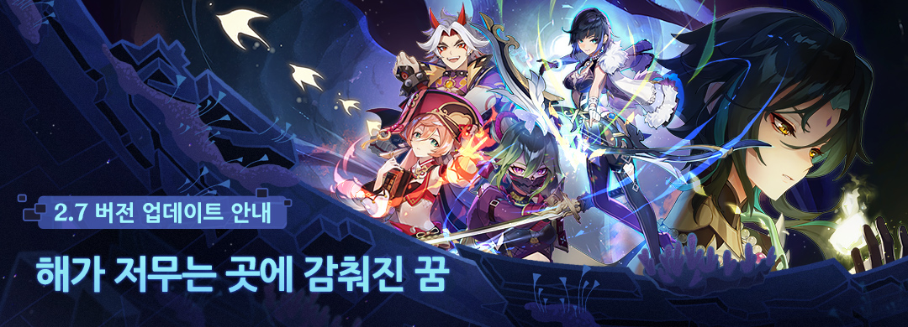
거연 속에 감춰진 일은 복잡하게 뒤얽혀 있고, 사람들은 서로 다른 목적으로 이곳에 모였다.
첩첩산중에는 적막이 가득하다. 방문한 사람들은 심란하지만 물어볼 곳이 없으며,
해가 저무는 곳에는 여전히 이루어지지 못한 꿈이 있다.
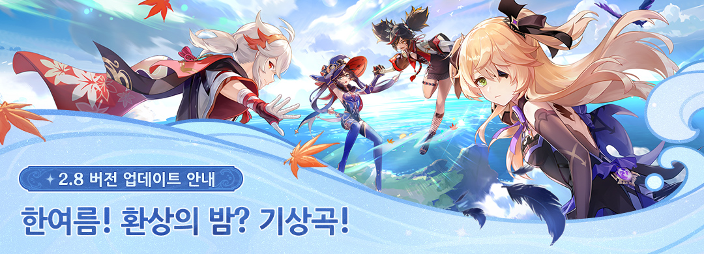
아름다운 한여름에는 항상 신기한 일이 발생하곤 한다.
출처를 알 수 없는 요도, 미해결 사건, 그리고 먼 바다에 있는 익숙하면서도 낯선 섬까지…
「수많은 시련을 겪은 용자여, 혼돈과 소멸을 두려워할 필요 없노라!」
「성스러운 암야의 황녀가 그대에게 승리 판결을 내릴지니.」
그렇게, 다들 정해진 운명에 따라 미지의 만남과 도전을 맞이할 준비를 한다.
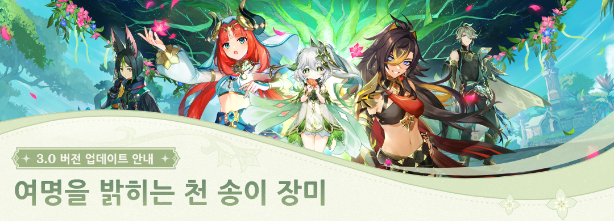
산에서 가득 비치는 푸른빛을 따고,
들판에서 사방에 핀 장미 향기를 맡는다.
동틀 무렵 알록달록한 새가 즐겁게 지저귀는 소리 속에서,
오랜 세월 잠들어 있던 지혜가 은은히 들려온다.
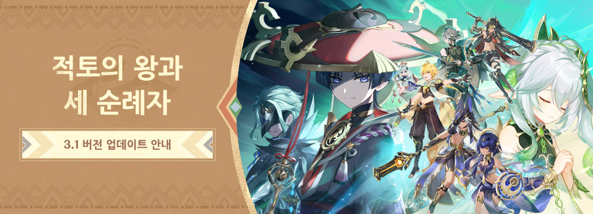
한때 사막을 호령하던 왕은 모래 아래 묻혔고,
한때 사막을 가르던 벽은 모래에 떠내려갔다.
그러나 지금, 감춰진 고대의 유적이 다시금 모습을 드러내어…
과거의 진실을 보여주려고 한다.
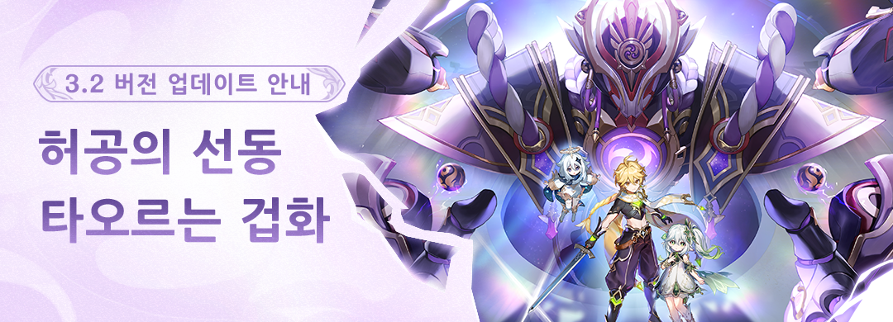
아카데미아의 6대 학파가 힘을 모은 비밀 프로젝트가 가장 중요한 결말에 접어들고 있다.
이렇게나 많은 비용과 시간, 그리고 노력을 들였으니, 분명 그만한 성과가 있을 것이다.
그러나 그 결과가 정말 그들이 원하던 것일지는, 그들에게 달려있지 않다…
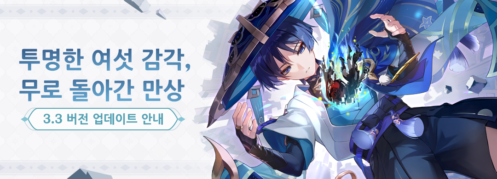
이나즈마는 예로부터 괴담과 전설이 끊이질 않는다.
물론 그중 어떤 것들은 대대로 이어지는 요괴들과 떼려야 뗄 수 없는 관계지만,
어떤 것들은 과거에 남겨진 이야기의 처량한 일각일지도 모른다…
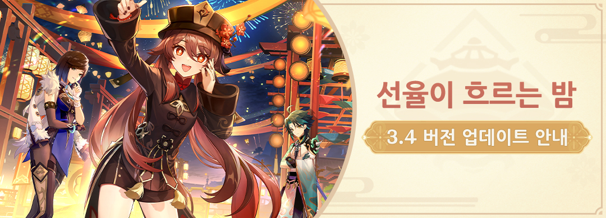
노래하자, 화려한 불꽃과 빛나는 노을 아래서.
춤추자, 모래먼지가 휘날리는 땅에서.
옛 음악이 추억의 꿈속에서 흩어지니,
오직 전설 속에서만
물살은 여전히 맑고, 습지는 영원히 푸르구나
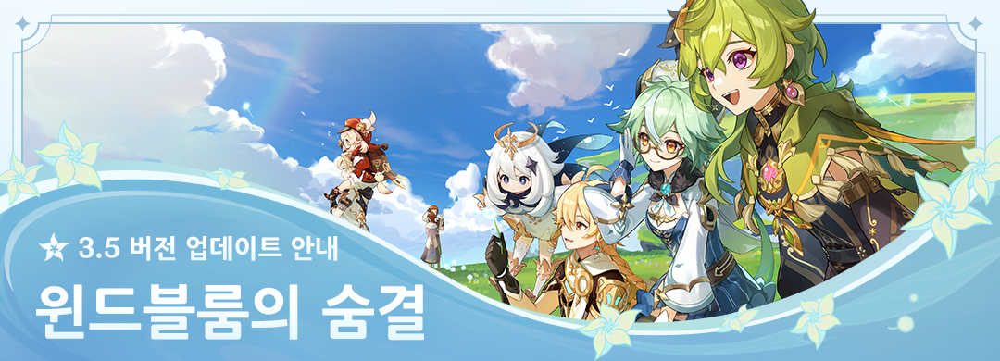
꽃향기처럼, 비와 이슬처럼… 누군가는 운명이 바람에 감춰져 있다고 말한다.
그것은 자연의 섭리이니 거스를 수 없다고 말이다.
한편 또 다른 누군가는 직접 운명을 찾아 나서고, 더 나아가 운명의 실타래를 다시 짜기까지 한다.
하지만, 애초에 이 모든 것조차 운명이 이끈 것은 아닐까?
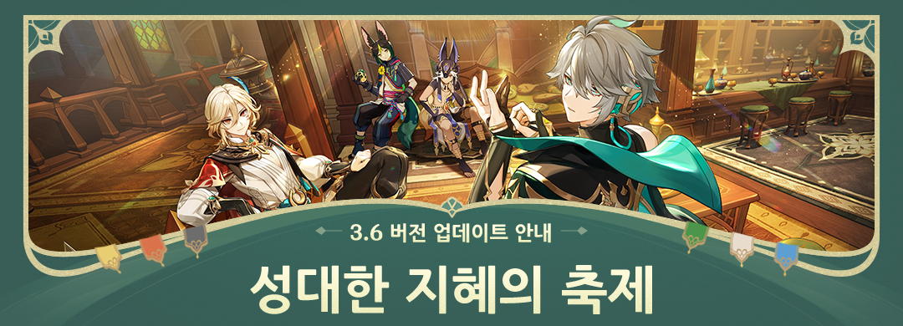
삶은 고통과 기쁨을 동반하며, 역사의 바다에서 끊임없이 퍼져나가고 있다.
삶은 거슬러 올라가는 여행과 같고, 사랑과 아름다움은 좋은 약과 같다. 지혜 역시 그러하다.
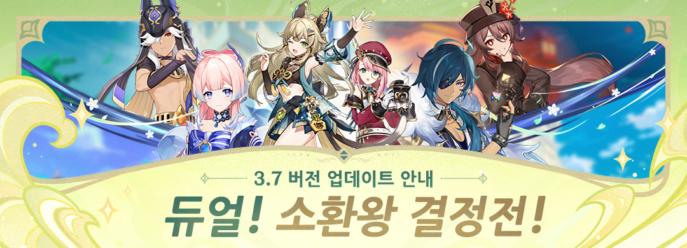
카드 대전은 인생과도 같다. 처음의 패는 운이 결정하지만, 역전의 기회는 경험이 가져다준다.
인생 역시 카드 대전과 같다. 승패는 잠깐의 종점일 뿐, 멋진 승부야말로 영원히 지속되는 선율이다.
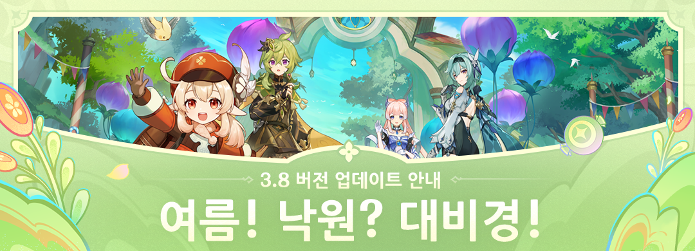
「『유리빛 신기루』에 오신 걸 환영합니다. 이곳에서 여행의 피로를 잠시나마 잊고 편안히 쉬다가 가시길 바랄게요」
여름은 뜨거운 햇살이 정박하는 항구이자 여행자가 휴식을 취하는 낙원이다.
눈 깜짝할 사이 지나갈 휴일에 조금 신나게 논다고 문제 될 게 뭐가 있겠는가?
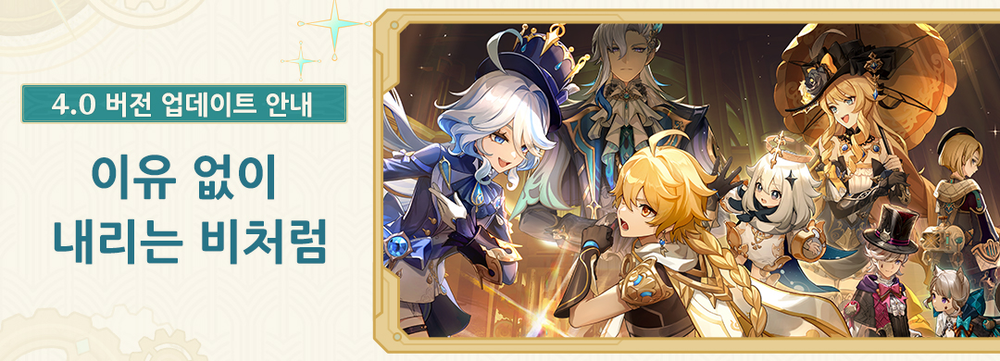
온 거리를 뒤덮는 가랑비와, 아스라이 피어오르는 물안개.
마술의 트릭에 집착하지 않는다면, 남은 것은 보고 즐기는 것뿐.
그러나 그럴듯한 희극에 불과하다면, 이유 없이 흐르는 눈물은 왜일까.
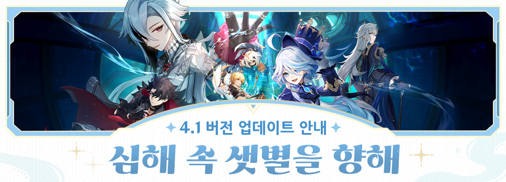
역사 속에 숨은 비밀이 깊은 심해에 묻혀 있다.
누군가 그 비밀을 밝히고, 또 누군가 파도를 타고 돌아올 때까지 말이다.
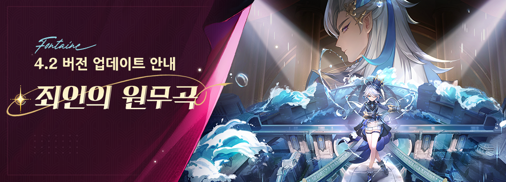
「이제 나의 마법이 모두 사라졌으니
부디 심판이 내 영혼의 족쇄를 풀어주길!
더는 이 외딴섬에 갇혀 홀로 춤추지 않게 되기를
내 가장 작은 희망을 바쳐 바라네」

 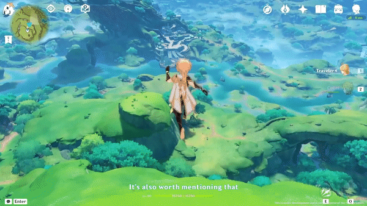
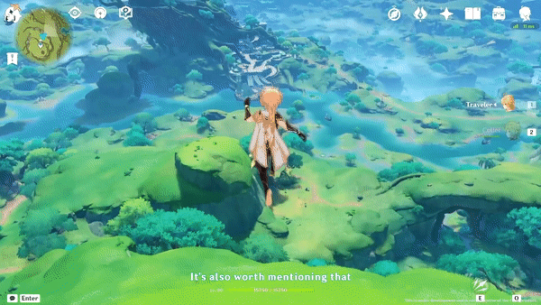
 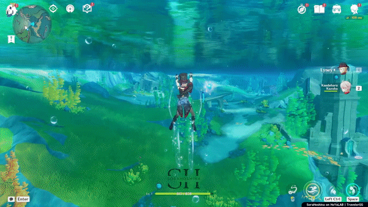
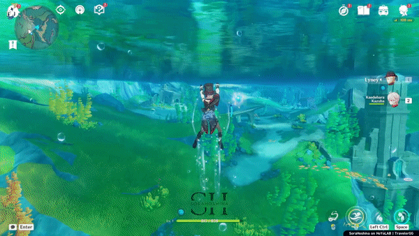
 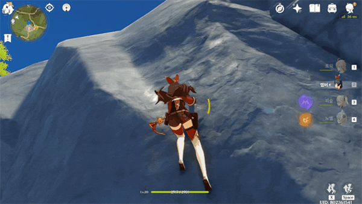
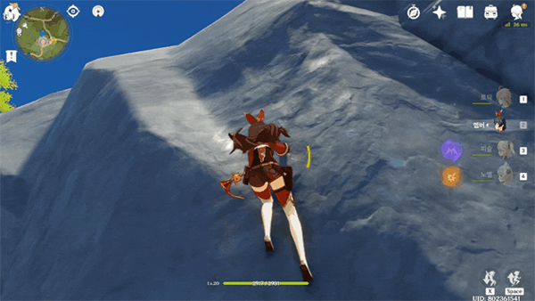